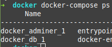
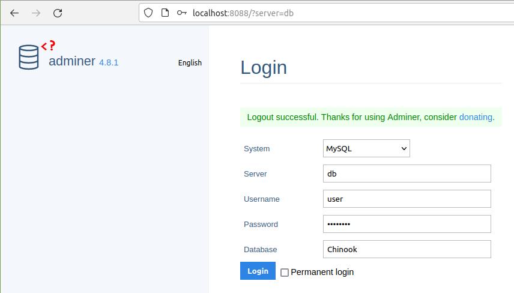
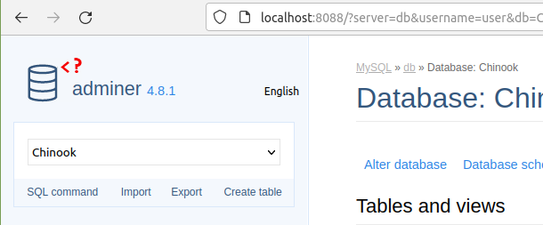
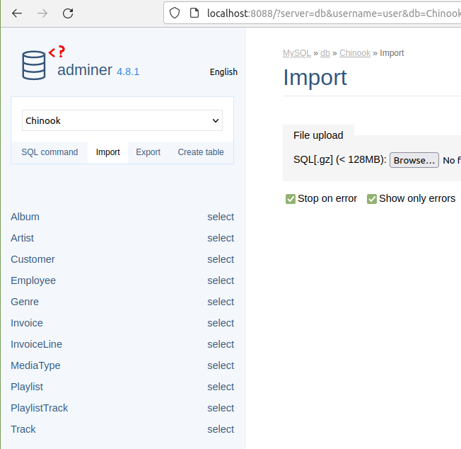

These are some brief instructions for installing a local MySQL database, using Docker Compose, for local development.
Install Containers
-
Download the docker-compose.yml file
wget 'https://gist.githubusercontent.com/jasonfigueroa/78db9eb5797b3351007b44fb18eae956/raw/871f6ee5354bfd61fcb53dace54a56c29b5f1a56/docker-compose.yml' -
Install the containers
docker-compose up
Setup Non-Root User
-
See the containers running
docker-compose ps -
Take note of the Name of the database container, in this example it's docker_db_1

-
Connect to the database server using the database container name
docker exec -it docker_db_1 mysql -uroot -prootpass -
Grant all privileges to the non-root user
GRANT ALL PRIVILEGES ON *.* TO 'user'@'%' WITH GRANT OPTION; -
Flush privileges
FLUSH PRIVILEGES;
Download the Chinook MySQL Import File
- Download the MySQL Chinook database import file
wget https://raw.githubusercontent.com/lerocha/chinook-database/master/ChinookDatabase/DataSources/Chinook_MySql_AutoIncrementPKs.sql
Login and Import the Chinook Database
-
Navigate to http://localhost:8088 in a browser
-
Login with username: user, password: userpass, database: Chinook

- Click on Import at the top left.

-
Under File Upload click on Browse and select the Chinook_MySql_AutoIncrementPKs.sql
-
Click the Execute button and wait a minute or two
-
You should see the sidebar populate with the tables.

Destroy Containers and Volume
- Destroy the Containers with
docker-compose down -v
Comments !